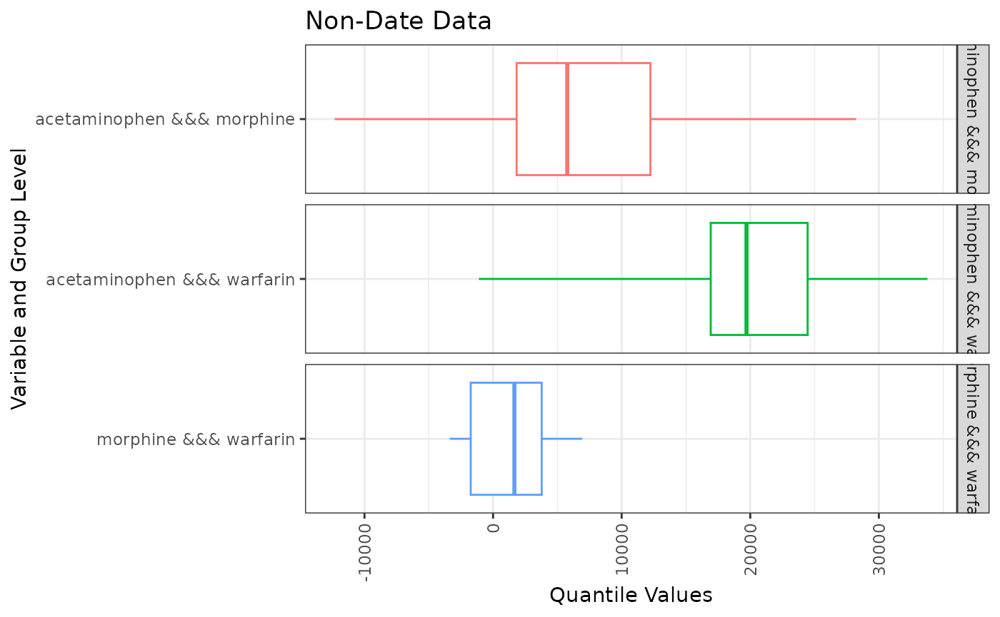
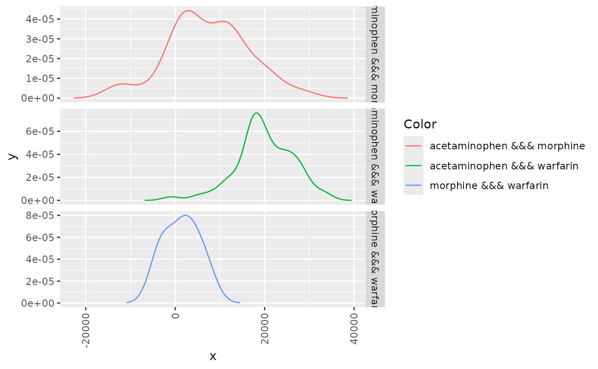

Summarise cohort timing
Source:vignettes/a09_summariseCohortTiming.Rmd
a09_summariseCohortTiming.RmdWe saw in the previous vignette how we can summarise the overlap
between cohorts. In addition to this, we might also be interested in
timings between cohorts. That is, the time between an individual
entering one cohort and another. For this we can use the
summariseCohortTiming(). In this example we’ll look at the
time between entering cohorts for acetaminophen, morphine, and
oxycodone.
library(CDMConnector)
library(CodelistGenerator)
library(PatientProfiles)
library(dplyr)
library(ggplot2)
con <- DBI::dbConnect(duckdb::duckdb(),
dbdir = CDMConnector::eunomia_dir())
cdm <- CDMConnector::cdm_from_con(con,
cdm_schem = "main",
write_schema = "main",
cdm_name = "Eunomia")
meds_cs <- getDrugIngredientCodes(cdm = cdm,
name = c("acetaminophen",
"morphine",
"warfarin"))
cdm <- generateConceptCohortSet(
cdm = cdm,
name = "meds",
conceptSet = meds_cs,
end = "event_end_date",
limit = "all",
overwrite = TRUE
)Now we have our cohorts we can summarise the timing between cohort entry. Note setting restrictToFirstEntry to TRUE will mean that we only consider timing between an individual’s first record in each cohort.
meds_timing <- cdm$meds |>
summariseCohortTiming(restrictToFirstEntry = TRUE)
meds_timing |>
glimpse()
#> Rows: 43
#> Columns: 16
#> $ result_id <int> 1, 1, 1, 1, 1, 1, 1, 1, 1, 1, 1, 1, 1, 1, 1, 1, 1, 1,…
#> $ cdm_name <chr> "Eunomia", "Eunomia", "Eunomia", "Eunomia", "Eunomia"…
#> $ result_type <chr> "cohort_timing", "cohort_timing", "cohort_timing", "c…
#> $ package_name <chr> "PatientProfiles", "PatientProfiles", "PatientProfile…
#> $ package_version <chr> "0.7.0", "0.7.0", "0.7.0", "0.7.0", "0.7.0", "0.7.0",…
#> $ group_name <chr> "cohort_name_reference &&& cohort_name_comparator", "…
#> $ group_level <chr> "acetaminophen &&& warfarin", "warfarin &&& acetamino…
#> $ strata_name <chr> "overall", "overall", "overall", "overall", "overall"…
#> $ strata_level <chr> "overall", "overall", "overall", "overall", "overall"…
#> $ variable_name <chr> "number records", "number records", "number records",…
#> $ variable_level <chr> NA, NA, NA, NA, NA, NA, NA, NA, NA, NA, NA, NA, NA, N…
#> $ estimate_name <chr> "count", "count", "count", "count", "count", "count",…
#> $ estimate_type <chr> "integer", "integer", "integer", "integer", "integer"…
#> $ estimate_value <chr> "136", "136", "6", "35", "35", "6", "136", "136", "6"…
#> $ additional_name <chr> "overall", "overall", "overall", "overall", "overall"…
#> $ additional_level <chr> "overall", "overall", "overall", "overall", "overall"…As with cohort overlap, we have table and plotting functions to help view our results.
tableCohortTiming(meds_timing,
.options = list(decimals = c(numeric = 0)))| CDM name | Cohort name reference | Cohort name comparator | Variable name | Estimate name | Estimate value |
|---|---|---|---|---|---|
| Eunomia | Acetaminophen | Morphine | Number records | N | 35 |
| Number subjects | N | 35 | |||
| Diff days | Median [Q25 - Q75] | 5,769 [1,835 - 12,239] | |||
| Range | -12,316 - 28,231 | ||||
| Warfarin | Number records | N | 136 | ||
| Number subjects | N | 136 | |||
| Diff days | Median [Q25 - Q75] | 19,709 [16,926 - 24,462] | |||
| Range | -1,106 - 33,784 | ||||
| Morphine | Warfarin | Number records | N | 6 | |
| Number subjects | N | 6 | |||
| Diff days | Median [Q25 - Q75] | 1,658 [-1,737 - 3,783] | |||
| Range | -3,376 - 6,937 |
plotCohortTiming(meds_timing,
facetBy = "cdm_name") +
theme_bw() +
theme(legend.position = "none",
axis.text.x = element_text(angle = 90,
vjust = 0.5,
hjust=1))
If we want to see an even more granular summary of cohort timings we can make a desity plot instead of a box plot. Note, for this we’ll need to set density as TRUE when getting our initial results.
meds_timing <- cdm$meds |>
summariseCohortTiming(restrictToFirstEntry = TRUE,
density = TRUE)
plotCohortTiming(meds_timing, type = "density")